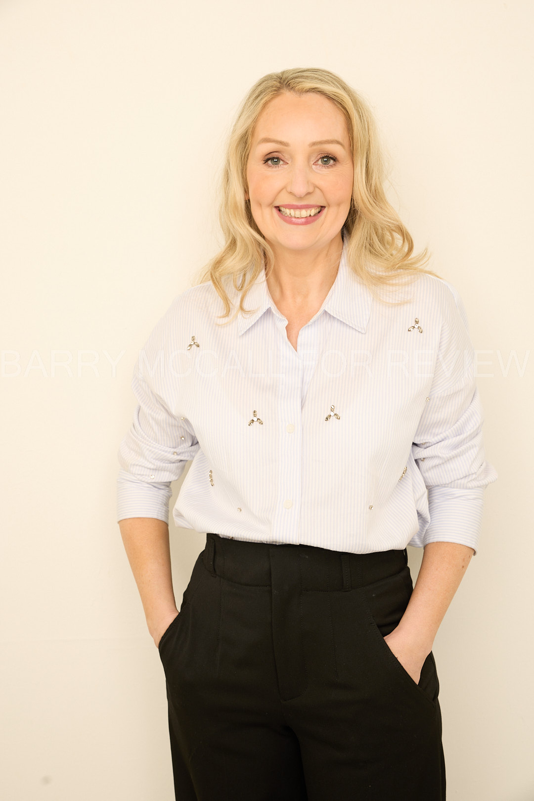
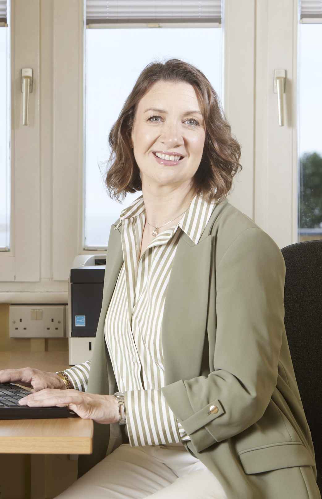

The bWell Clinic Philosophy
On walking through the door, you will know that you are embarking on a positive journey to get you where you want to be, and give you back that feeling of being in control, improving the quality of your life and having a sense of life balance and wellbeing.

About Us Our Team
Allison Keating

Chartered Psychologist (PSI) | Columnist | Broadcaster Author of 'It's All Too Much' & 'The Secret Lives of Adults'
Allison is a well known and respected Registered Psychologist in Ireland. The bWell Clinic opened in September 2004. In conjunction with her busy practice she has been a regular Psychological Media contributor which has lead to being published in some of Ireland's most popular publications and also given rise to a high profile media career.Academic Background
Allison Keating is a Chartered Psychologist of the Psychological Society of Ireland. Training includes a Masters and Degree in Psychology. Allison was invited to present her BSc. thesis "Cognitive Dissonance and the Millennium Bug" at the BRAINSTORM conference at the World Trade Centre, New York in 1999. She also was invited to present her research in London to a symposium of Y2K experts. Allison follow the Psychological Society of Ireland Professional Code of Ethics and engages in clinical supervision.
Professional Background
Allison worked as a trauma counsellor for the FÁS Asylum Seekers Unit processing 256 asylum seekers into training, job placement and helping them through Post Traumatic Stress Disorder. Assisted employees undergoing transitioning through major change management & redundancy at Gateway Ireland (800 employees); Celestica (450 employees) and Aer Lingus (1600 employees). Masters thesis in DCU looked at burnout "An investigation into the potential effects of emotional labour on front-line staff" which is a research topic that is unfortunately becoming even more important. Career Centre Manager at Diageo Ireland (600 employees) using a career system to help identify strengths and the next best step for people. With the successful completion of that project she was asked to run a pilot programme under the auspices of Northside Partnership, Social Welfare and Career Decisions International called 'Enabled for Life' for people with mental, physical and emotional disabilities. Allison ran two of these Enabled for Life programmes and the programme has now become a nationwide programme. Allison decided to establish her own clinic and worked under a franchise agreement for two years. Allison ran "a behavioural Psychology franchise" for two years and in December 2006 opened the bWell clinic. The bWell clinic works extensively with anxiety and panic disorders, relationships, depression and cultivating good mental health. The ethos is to support the client therapeutically in a safe, evidence & strength based clinic with experienced empathetic therapists. I have a major interest in de-stigmatizing mental health and have been contributing via media since 2006. I have contributed on Psychological topics on TV3's Ireland AM over the last decade running a nine week mental health series that looked at the day to day issues I would work with at the clinic such as Panic attacks, anxiety, depression, eating disorders, phobias, social phobias, stress, family and personal relationships. I ran a ten week Positive Psychology series that looked at resilience, optimism, mindfulness, changing negative thought patterns, and many more. I was in series one and two of TV3's 'How Healthy are you?' focusing on anxiety in series one and two and CBT for weight loss in series two. I enjoy contributing evidence based Psychology through the media and it is a personal value of mine to share evidence based information in a time of information overload. RTE 2's 6 part series 'Then Comes Marriage' saw myself and Psychoanalyst Ray O'Neill helping couples thinking of getting married navigate the usual bumps in relationships. Really reflecting on our relationship with money, sex, gender roles, conflict & how we communicate. I loved putting love and science into bed together as we know from research the things that nurture your relationship and the sure fire relationship wreckers and I hope the programme helped people identify and change aspects of their relationship. Change is necessary and good in relationships.
Specialities
I work extensively with anxiety and panic attacks and I see it as a hidden epidemic in Ireland. I have been very happy with results generated through innovative Positive Psychology strategies which works on a strengths based model and CBT (cognitive behavioural therapy) which is a solution focused therapy. I also integrate Psycho-dynamic therapy to understand how your earlier relationships may still be impacting your current behaviour(s) which lends itself to a very well rounded approach to helping you on your therapeutic journey with progressive, research driven, emphatic and solutions focused therapy. The ethos of the bWell Clinic is cultivating good mental well-being and to surpass ethical and professional standards of excellence. Showing the client how to become happier and healthier and changing the therapy process into an enjoyable transition from where you are now to where you want to be. The mission statement of the bWell Clinic is to create a more authentic happiness and quality of life in all of our clients and to show them how to tap into their own potential, now and in the future. To equip the client with skills and techniques that can be used in a practical sense in everyday life. We look forward to meeting and helping you, Allison
A bit about me
From Malahide, I am very grateful to be near the beach, the castle, and playground (not for me!) and my family. Family is number one and we live and breathe our three gorgeous girls with lots of love and many sleepless nights! I love Psychology, I love how research can be applied to your daily life to make it one of great worth and purpose to you. We live in a time of so many great minds and thinkers and with unprecedented access to these people I feel there is so much opportunity within our grasp. I have always been fascinated by people and how they think, and this has only increased with being lucky enough to share in people's deeply personal therapeutic journey. I thank all my clients for what they have shared with me, and I am humbled by the strength of the human spirit every day. It is with great pleasure that we extend a warm welcome to you on you on your personal journey.
Marie Power

Registered Psychologist (PSI)
Marie holds a Masters in Work and Organisational Psychology from University College Dublin, as well as a BA in Psychology, BA in Counselling and Psychotherapy from Dublin Business School and a Professional Certificate in Cognitive Behavioural Therapy from PCI College and is also a Life and Business Coach. Marie follows both the PSI's, Psychological Society of Ireland Professional Code of Ethicsand the IACP Irish Association of Counsellors and Psychotherapists Code of Ethics and engages in ongoing clinical supervision to ensure that her clients are provided with the best possible care. Professional Background: Marie has worked as a work and organisational psychologist for over 10 years. During this period she worked as a Senior Consultant for RSM Tenon, Farrell Grant Sparks and the Great Place to Work Institute providing leadership development coaching and learning support to the Top 100 companies in Ireland in both the public and private sector. She also works as Talent and Development Specialist for Vodafone Ireland providing career guidance and coaching for talent at all levels in organisation from graduate to Director. In terms of Counselling experience Marie started her career in Jigsaw Community Counselling in Belfast (between the Shankill and Falls Road). There she worked with clients presenting with everything from Post Traumatic Stress disorder, sexual addiction, depression, anxiety, eating disorders, bereavement to relationship breakdowns. During her time here she wrote her thesis which was focused on the intergenerational impact of Post Traumatic Stress Disorder in Northern Ireland earning her a first class honour. From there Marie went on to practice counselling and psychotherapy support for Irish Autism Action, in particular providing supportive counselling for parents whose children had recently been diagnosed with Autism, Asperger's and/or Dyspraxia. From there she went on to practice in Greystone Counselling with a varied case load. Most recently she undertook a Professional Certificate in CBT (Cognitive Behavioural Therapy) and works in a integrative fashion using tools and techniques from the different therapeutic schools depending on the presenting issue. She has a particular interest in positive psychology, stress management and mindfulness. Marie is delighted to join Allison as a therapist in the bWell Clinic.
Follow us on: